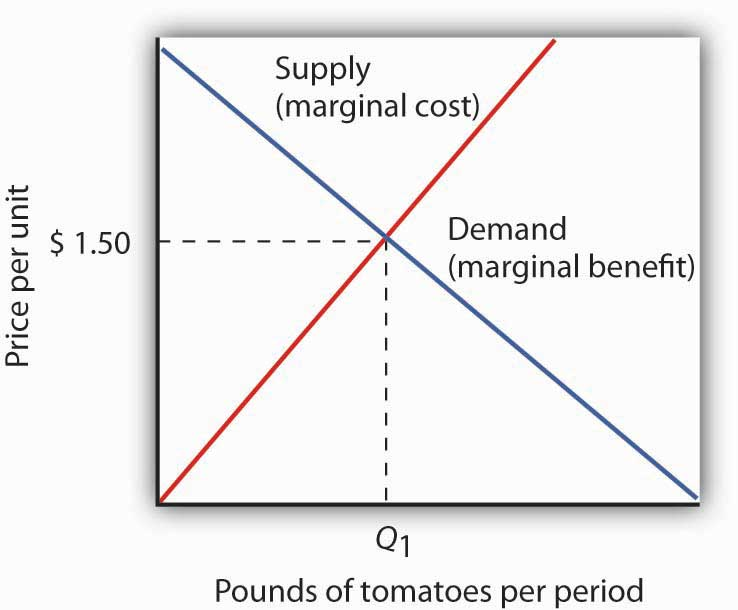
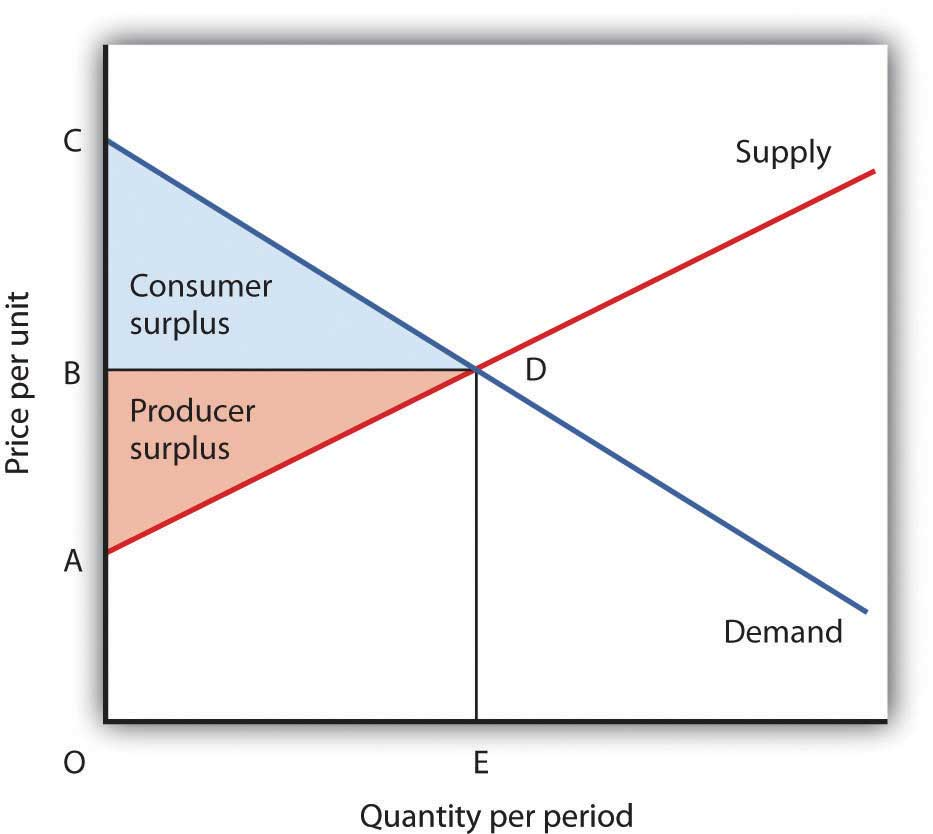

Suppose you decide to take a drive. For purposes of this example, we will assume that you have a car available, that the weather is pleasant, and that there is an area nearby that will be perfect for your drive.
Your decision to take this drive is a choice. Since economics deals with choices, we can put economics to work in thinking about it. Economists assume that people make choices that maximize the value of some objective. You are a consumer; we assume that taking a drive is a choice that maximizes your utility—the satisfaction you obtain from your use of goods and services and from the activities you pursue.
You certainly plan to enjoy the drive; that enjoyment is the benefit you expect from it. But you will give up some things as well. Your drive will take some time, time you could have spent doing something else. It will take some gasoline; what you spend for the gasoline could have been used for something else. The drive will also generate some wear and tear on your car. That will cost you the price of repair and maintenance and reduced resale value of your car. The opportunity cost of your drive will thus include the value of the best other use of your time and the value of the best other use of the funds your drive will require. To maximize utility you will weigh the benefits of the drive against the cost of the drive and maximize the difference between those benefits and costs.
This chapter introduces the method through which maximizing choices can be made. This method applies not just to your decision to take a drive, but also to Wal-Mart’s decision to hire extra workers and to USX Corporation’s to produce extra steel. The method we will learn can be applied to the analysis of any choice; we will use it throughout our investigation of microeconomics.
We will also see how maximizing choices by individuals and by firms can lead to an allocation of resources that generates the greatest gains possible for the economy as a whole. In this analysis, we will put a new item in our toolkit, the method through which individuals and firms maximize, together with demand and supply analysis, to see how the marketplace can guide resources to their best uses.
We will also examine cases in which maximizing choices do not guide resources to their best uses. That possibility is suggested by another aspect of your choice to take a drive. In addition to the costs you will consider, there will be costs imposed on others. Your drive will pollute the air, so part of the opportunity cost of the drive will be the value of the slightly cleaner air people in your area might have had. Resources such as the air we breathe will almost certainly be misallocated as the result of maximizing choices. We will see just how misallocation of an economy’s resources can occur and how this misallocation could be fixed.
To say that individuals maximize is to say that they pick some objective and then seek to maximize its value. A sprinter might want to maximize his or her speed; a politician might want to maximize the probability that he or she will win the next election. Economists pay special attention to two groups of maximizers: consumers and firms. We assume that consumers seek to maximize utility and that firms seek to maximize economic profitThe difference between total revenue and total cost., which is the difference between total revenue and total cost. The costs involved in this concept of economic profit are computed in the economic sense—as the opportunity costs, or value of the best opportunity forgone.
The assumption of maximizing behavior lies at the heart of economic analysis. As we explore its implications, however, we must keep in mind the distinction between models and the real world. Our model assumes that individuals make choices in a way that achieves a maximum value for some clearly defined objective. In using such a model, economists do not assume that people actually go through the calculations we will describe. What economists do argue is that people’s behavior is broadly consistent with such a model. People may not consciously seek to maximize anything, but they behave as though they do.
The activities of consumers and firms have benefits, and they also have opportunity costs. We assume that given these benefits and costs, consumers and firms will make choices that maximize the net benefitThe total benefit of an activity minus its opportunity cost. of each activity—the total benefit of the activity minus its opportunity cost. The specific measures of benefit and cost vary with the kind of choice being made. In the case of a firm’s choices in production, for example, the total benefit of production is the revenue a firm receives from selling the product; the total cost is the opportunity cost the firm incurs by producing it. The net benefit is thus total revenue minus total opportunity cost, or economic profit.
Economists maintain that in order to maximize net benefit, consumers and firms evaluate each activity at the margin—they consider the additional benefit and the additional cost of another unit of the activity. Should you “supersize” your order at McDonald’s? Will the additional beverage and the additional french fries be worth the extra cost? Should a firm hire one more worker? Will the benefits to the firm of hiring this worker be worth the additional cost of hiring him or her?
The marginal benefitThe amount by which an additional unit of an activity increases its total benefit. is the amount by which an additional unit of an activity increases its total benefit. It is the amount by which the extra french fries increase your satisfaction, or the extra revenue the firm expects to bring in by hiring another worker. The marginal costThe amount by which an additional unit of an activity increases its total cost. is the amount by which an additional unit of an activity increases its total cost. You will pay more to supersize your McDonald’s order; the firm’s labor costs will rise when it hires another worker.
To determine the quantity of any activity that will maximize its net benefit, we apply the marginal decision ruleIf the marginal benefit of an additional unit of an activity exceeds the marginal cost, the quantity of the activity should be increased. If the marginal benefit is less than the marginal cost, the quantity should be reduced.: If the marginal benefit of an additional unit of an activity exceeds the marginal cost, the quantity of the activity should be increased. If the marginal benefit is less than the marginal cost, the quantity should be reduced. Net benefit is maximized at the point at which marginal benefit equals marginal cost. The marginal decision rule is at the heart of the economic way of thinking. The rule basically says this: If the additional benefit of one more unit exceeds the extra cost, do it; if not, do not. This simple logic gives us a powerful tool for the analysis of choice. Perhaps more than any other rule in economic analysis, the marginal decision rule typifies the way in which economists analyze problems. We shall apply it in every chapter that follows in the microeconomics portion of this text.
Maximizing choices must be made within the parameters imposed by some constraintA boundary that limits the range of choices that can be made., which is a boundary that limits the range of choices that can be made. We assume that a consumer seeks the greatest satisfaction possible within the limits of his or her income or budget. A firm cannot produce beyond the limits of its production capacity at a point in time.
The marginal decision rule forms the foundation for the structure economists use to analyze all choices. At first glance, it may seem that a consumer seeking satisfaction from, say, pizza has little in common with an entrepreneur seeking profit from the production of custom-designed semiconductors. But maximizing choices always follow the marginal decision rule—and that rule holds regardless of what is being maximized or who is doing the maximizing.
To see how the logic of maximizing choices works, we will examine a specific problem. We will then extend that problem to the general analysis of maximizing choices.
Suppose a college student, Laurie Phan, faces two midterms tomorrow, one in economics and another in accounting. She has already decided to spend 5 hours studying for the two examinations. This decision imposes a constraint on the problem. Suppose that Ms. Phan’s goal is to allocate her 5 hours of study so that she increases her total score for the two exams by as much as possible.
Ms. Phan expects the relationship between the time she spends studying for the economics exam and the total gain in her score to be as given by the second row of the table in Panel (a) of Figure 6.1 "The Benefits of Studying Economics". We interpret the expected total gain in her score as the total benefit of study. She expects that 1 hour of study will raise her score by 18 points; 2 hours will raise it by 32 points, and so on. These values are plotted in Panel (b). Notice that the total benefit curve rises, but by smaller and smaller amounts, as she studies more and more. The slope of the curve, which in this case tells us the rate at which her expected score rises with increased study time, falls as we travel up and to the right along the curve.
Figure 6.1 The Benefits of Studying Economics

The table in Panel (a) shows the total benefit and marginal benefit of the time Laurie Phan spends studying for her economics exam. Panel (b) shows the total benefit curve. Panel (c) shows the marginal benefit curve, which is given by the slope of the total benefit curve in Panel (b).
Now look at the third row in the table in Panel (a). It tells us the amount by which each additional hour of study increases her expected score; it gives the marginal benefit of studying for the economics exam. Marginal benefit equals the amount by which total benefit rises with each additional hour of study. Because these marginal benefits are given by the changes in total benefits from additional hours of study, they equal the slope of the total benefit curve. We see this in the relationship between Panels (b) and (c) of Figure 6.1 "The Benefits of Studying Economics". The decreasing slope of the total benefit curve in Panel (b) gives us the downward-sloping marginal benefit curve in Panel (c).
The marginal benefit curve tells us what happens when we pass from one point to another on the total benefit curve, so we have plotted marginal benefits at the midpoints of the hourly intervals in Panel (c). For example, the total benefit curve in Panel (b) tells us that, when Ms. Phan increases her time studying for the economics exam from 2 hours to 3 hours, her total benefit rises from 32 points to 42 points. The increase of 10 points is the marginal benefit of increasing study time for the economics exam from 2 hours to 3 hours. We mark the point for a marginal benefit of 10 points midway between 2 and 3 hours. Because marginal values tell us what happens as we pass from one quantity to the next, we shall always plot them at the midpoints of intervals of the variable on the horizontal axis.
We can perform the same kind of analysis to obtain the marginal benefit curve for studying for the accounting exam. Figure 6.2 "The Marginal Benefits of Studying Accounting" presents this curve. Like the marginal benefit curve for studying economics, it slopes downward. Once again, we have plotted marginal values at the midpoints of the intervals. Increasing study time in accounting from 0 to 1 hour increases Ms. Phan’s expected accounting score by 14 points.
Figure 6.2 The Marginal Benefits of Studying Accounting

The marginal benefit Laurie Phan expects from studying for her accounting exam is shown by the marginal benefit curve. The first hour of study increases her expected score by 14 points, the second hour by 10 points, the third by 6 points, and so on.
Ms. Phan’s marginal benefit curves for studying typify a general phenomenon in economics. Marginal benefit curves for virtually all activities, including the activities of consumers and of firms, slope downward. Think about your own experience with studying. On a given day, the first hour spent studying a certain subject probably generates a greater marginal benefit than the second, and the second hour probably generates a greater marginal benefit than the third. You may reach a point at which an extra hour of study is unlikely to yield any benefit at all. Of course, our example of Laurie Phan’s expected exam scores is a highly stylized one. One could hardly expect a student to have a precise set of numbers to guide him or her in allocating study time. But it is certainly the case that students have a rough idea of the likely payoff of study time in different subjects. If you were faced with exams in two subjects, it is likely that you would set aside a certain amount of study time, just as Ms. Phan did in our example. And it is likely that your own experience would serve as a guide in determining how to allocate that time. Economists do not assume that people have numerical scales in their heads with which to draw marginal benefit and marginal cost curves. They merely assume that people act as if they did.
The nature of marginal benefits can change with different applications. For a restaurant, the marginal benefit of serving one more meal can be defined as the revenue that meal produces. For a consumer, the marginal benefit of one more slice of pizza can be considered in terms of the additional satisfaction the pizza will create. But whatever the nature of the benefit, marginal benefits generally fall as quantities increase.
Ms. Phan’s falling marginal benefit from hours spent studying accounting has special significance for our analysis of her choice concerning how many hours to devote to economics. In our problem, she had decided to devote 5 hours to studying the two subjects. That means that the opportunity cost of an hour spent studying economics equals the benefit she would have gotten spending that hour studying accounting.
Suppose, for example, that she were to consider spending all 5 hours studying accounting. The marginal benefit curve for studying for her accounting exam tells us that she expects that the fifth hour will add nothing to her score. Shifting that hour to economics would cost nothing. We can say that the marginal cost of the first hour spent studying economics is zero. We obtained this value from the marginal benefit curve for studying accounting in Figure 6.2 "The Marginal Benefits of Studying Accounting".
Similarly, we can find the marginal cost of the second hour studying economics. That requires giving up the fourth hour spent on accounting. Figure 6.2 "The Marginal Benefits of Studying Accounting" tells us that the marginal benefit of that hour equals 2—that is the marginal cost of spending the second hour studying economics.
Figure 6.3 "The Marginal Benefits and Marginal Costs of Studying Economics" shows the marginal cost curve of studying economics. We see that at first, time devoted to studying economics has a low marginal cost. As time spent studying economics increases, however, it requires her to give up study time in accounting that she expects will be more and more productive. The marginal cost curve for studying economics can thus be derived from the marginal benefit curve for studying accounting. Figure 6.3 "The Marginal Benefits and Marginal Costs of Studying Economics" also shows the marginal benefit curve for studying economics that we derived in Panel (b) of Figure 6.1 "The Benefits of Studying Economics".
Figure 6.3 The Marginal Benefits and Marginal Costs of Studying Economics

The marginal benefit curve from Panel (c) of Figure 6.1 "The Benefits of Studying Economics" is shown together with the marginal costs of studying economics. The marginal cost curve is derived from the marginal benefit curve for studying accounting shown in Figure 6.2 "The Marginal Benefits of Studying Accounting".
Just as marginal benefit curves generally slope downward, marginal cost curves generally slope upward, as does the one in Figure 6.3 "The Marginal Benefits and Marginal Costs of Studying Economics". In the case of allocating time, the phenomenon of rising marginal cost results from the simple fact that, the more time a person devotes to one activity, the less time is available for another. And the more one reduces the second activity, the greater the forgone marginal benefits are likely to be. That means the marginal cost curve for that first activity rises.
Because we now have marginal benefit and marginal cost curves for studying economics, we can apply the marginal decision rule. This rule says that, to maximize the net benefit of an activity, a decision maker should increase an activity up to the point at which marginal benefit equals marginal cost. That occurs where the marginal benefit and marginal cost curves intersect, with 3 hours spent studying economics and 2 hours spent studying accounting.
We can use marginal benefit and marginal cost curves to show the total benefit, the total cost, and the net benefit of an activity. We will see that equating marginal benefit to marginal cost does, indeed, maximize net benefit. We will also develop another tool to use in interpreting marginal benefit and cost curves.
Panel (a) of Figure 6.4 "The Benefits and Costs of Studying Economics" shows the marginal benefit curve we derived in Panel (c) of Figure 6.1 "The Benefits of Studying Economics". The corresponding point on the marginal benefit curve gives the marginal benefit of the first hour of study for the economics exam, 18 points. This same value equals the area of the rectangle bounded by 0 and 1 hour of study and the marginal benefit of 18. Similarly, the marginal benefit of the second hour, 14 points, is shown by the corresponding point on the marginal benefit curve and by the area of the shaded rectangle bounded by 1 and 2 hours of study. The total benefit of 2 hours of study equals the sum of the areas of the first two rectangles, 32 points. We continue this procedure through the fifth hour of studying economics; the areas for each of the shaded rectangles are shown in the graph.
Figure 6.4 The Benefits and Costs of Studying Economics

Panel (a) shows the marginal benefit curve of Figure 6.1 "The Benefits of Studying Economics". The total benefit of studying economics at any given quantity of study time is given approximately by the shaded area below the marginal benefit curve up to that level of study. Panel (b) shows the marginal cost curve from Figure 6.3 "The Marginal Benefits and Marginal Costs of Studying Economics". The total cost of studying economics at any given quantity of study is given approximately by the shaded area below the marginal cost curve up to that level of study.
Two features of the curve in Panel (a) of Figure 6.4 "The Benefits and Costs of Studying Economics" are particularly important. First, note that the sum of the areas of the five rectangles, 50 points, equals the total benefit of 5 hours of study given in the table in Panel (a) of Figure 6.1 "The Benefits of Studying Economics". Second, notice that the shaded areas are approximately equal to the area under the marginal benefit curve between 0 and 5 hours of study. We can pick any quantity of study time, and the total benefit of that quantity equals the sum of the shaded rectangles between zero and that quantity. Thus, the total benefit of 2 hours of study equals 32 points, the sum of the areas of the first two rectangles.
Now consider the marginal cost curve in Panel (b) of Figure 6.4 "The Benefits and Costs of Studying Economics". The areas of the shaded rectangles equal the values of marginal cost. The marginal cost of the first hour of study equals zero; there is thus no rectangle under the curve. The marginal cost of the second hour of study equals 2 points; that is the area of the rectangle bounded by 1 and 2 hours of study and a marginal cost of 2. The marginal cost of the third hour of study is 6 points; this is the area of the shaded rectangle bounded by 2 and 3 hours of study and a marginal cost of 6.
Looking at the rectangles in Panel (b) over the range of 0 to 5 hours of study, we see that the areas of the five rectangles total 32, the total cost of spending all 5 hours studying economics. And looking at the rectangles, we see that their area is approximately equal to the area under the marginal cost curve between 0 and 5 hours of study.
We have seen that the areas of the rectangles drawn with Laurie Phan’s marginal benefit and marginal cost curves equal the total benefit and total cost of studying economics. We have also seen that these areas are roughly equal to the areas under the curves themselves. We can make this last statement much stronger. Suppose, instead of thinking in intervals of whole hours, we think in terms of smaller intervals, say, of 12 minutes. Then each rectangle would be only one-fifth as wide as the rectangles we drew in Figure 6.4 "The Benefits and Costs of Studying Economics". Their areas would still equal the total benefit and total cost of study, and the sum of those areas would be closer to the area under the curves. We have done this for Ms. Phan’s marginal benefit curve in Figure 6.5 "The Marginal Benefit Curve and Total Benefit"; notice that the areas of the rectangles closely approximate the area under the curve. They still “stick out” from either side of the curve as did the rectangles we drew in Figure 6.4 "The Benefits and Costs of Studying Economics", but you almost need a magnifying glass to see that. The smaller the interval we choose, the closer the areas under the marginal benefit and marginal cost curves will be to total benefit and total cost. For purposes of our model, we can imagine that the intervals are as small as we like. Over a particular range of quantity, the area under a marginal benefit curve equals the total benefit of that quantity, and the area under the marginal cost curve equals the total cost of that quantity.
Figure 6.5 The Marginal Benefit Curve and Total Benefit

When the increments used to measure time allocated to studying economics are made smaller, in this case 12 minutes instead of whole hours, the area under the marginal benefit curve is closer to the total benefit of studying that amount of time.
Panel (a) of Figure 6.6 "Using Marginal Benefit and Marginal Cost Curves to Determine Net Benefit" shows marginal benefit and marginal cost curves for studying economics, this time without numbers. We have the usual downward-sloping marginal benefit curve and upward-sloping marginal cost curve. The marginal decision rule tells us to choose D hours studying economics, the quantity at which marginal benefit equals marginal cost at point C. We know that the total benefit of study equals the area under the marginal benefit curve over the range from A to D hours of study, the area ABCD. Total cost equals the area under the marginal cost curve over the same range, or ACD. The difference between total benefit and total cost equals the area between marginal benefit and marginal cost between A and D hours of study; it is the green-shaded triangle ABC. This difference is the net benefit of time spent studying economics. Panel (b) of Figure 6.6 "Using Marginal Benefit and Marginal Cost Curves to Determine Net Benefit" introduces another important concept. If an activity is carried out at a level less than the efficient level, then net benefits are forgone. The loss in net benefits resulting from a failure to carry out an activity at the efficient level is called a deadweight lossThe loss in net benefits resulting from a failure to carry out an activity at the most efficient level..
Figure 6.6 Using Marginal Benefit and Marginal Cost Curves to Determine Net Benefit

In Panel (a) net benefits are given by the difference between total benefits (as measured by the area under the marginal benefit curve up to any given level of activity) and total costs (as measured by the area under the marginal cost curve up to any given level of activity). Maximum net benefits are found where the marginal benefit curve intersects the marginal cost curve at activity level D. Panel (b) shows that if the level of the activity is restricted to activity level E, net benefits are reduced from the light-green shaded triangle ABC in Panel (a) to the smaller area ABGF. The forgone net benefits, or deadweight loss, is given by the purple-shaded area FGC. If the activity level is increased from D to J, as shown in Panel (c), net benefits declined by the deadweight loss measured by the area CHI.
Now suppose a person increases study time from D to J hours as shown in Panel (c). The area under the marginal cost curve between D and J gives the total cost of increasing study time; it is DCHJ. The total benefit of increasing study time equals the area under the marginal benefit curve between D and J; it is DCIJ. The cost of increasing study time in economics from D hours to J hours exceeds the benefit. This gives us a deadweight loss of CHI. The net benefit of spending J hours studying economics equals the net benefit of studying for D hours less the deadweight loss, or ABC minus CHI. Only by studying up to the point at which marginal benefit equals marginal cost do we achieve the maximum net benefit shown in Panel (a).
We can apply the marginal decision rule to the problem in Figure 6.6 "Using Marginal Benefit and Marginal Cost Curves to Determine Net Benefit" in another way. In Panel (b), a person studies economics for E hours. Reading up to the marginal benefit curve, we reach point G. Reading up to the marginal cost curve, we reach point F. Marginal benefit at G exceeds marginal cost at F; the marginal decision rule says economics study should be increased, which would take us toward the intersection of the marginal benefit and marginal cost curves. Spending J hours studying economics, as shown in Panel (c), is too much. Reading up to the marginal benefit and marginal cost curves, we see that marginal cost exceeds marginal benefit, suggesting that study time be reduced.
This completes our introduction to the marginal decision rule and the use of marginal benefit and marginal cost curves. We will spend the remainder of the chapter applying the model.
It is easy to make the mistake of assuming that if an activity is carried out up to the point where marginal benefit equals marginal cost, then net benefits must be zero. Remember that following the marginal decision rule and equating marginal benefits and costs maximizes net benefits. It makes the difference between total benefits and total cost as large as possible.
Suppose Ms. Phan still faces the exams in economics and in accounting, and she still plans to spend a total of 5 hours studying for the two exams. However, she revises her expectations about the degree to which studying economics and accounting will affect her scores on the two exams. She expects studying economics will add somewhat less to her score, and she expects studying accounting will add more. The result is the table below of expected total benefits and total costs of hours spent studying economics. Notice that several values in the table have been omitted. Fill in the missing values in the table. How many hours of study should Ms. Phan devote to economics to maximize her net benefit?
| Hours studying economics | 0 | 1 | 2 | 3 | 4 | 5 |
| Total benefit | 0 | 14 | 24 | 30 | 32 | |
| Total cost | 0 | 2 | 8 | 32 | 50 | |
| Net benefit | 0 | 12 | 12 | 0 | −18 |
Now compute the marginal benefits and costs of hours devoted to studying economics, completing the table below.

Draw the marginal benefit and marginal cost curves for studying economics (remember to plot marginal values at the midpoints of the respective hourly intervals). Do your curves intersect at the “right” number of hours of study—the number that maximizes the net benefit of studying economics?
Do we spill enough oil in our oceans and waterways? It is a question that perhaps only economists would ask—and, as economists, we should ask it.
There is, of course, no virtue in an oil spill. It destroys wildlife and fouls shorelines. Cleanup costs can be tremendous. However, preventing oil spills has costs as well: greater enforcement expenditures and higher costs to shippers of oil and, therefore, higher costs of goods such as gasoline to customers. The only way to prevent oil spills completely is to stop drilling for and shipping oil. That is a cost few people would accept. But what is the right balance between environmental protection and the satisfaction of consumer demand for oil?
Vanderbilt University economist Mark Cohen examined the U.S. Coast Guard’s efforts to reduce oil spills when transporting oil through its enforcement of shipping regulations in coastal waters and on rivers. He focused on the costs and benefits resulting from the Coast Guard’s enforcement efforts in 1981. On the basis of the frequency of oil spills before the Coast Guard began its enforcement, Mr. Cohen estimated that the Coast Guard prevented 1,159,352 gallons of oil from being spilled in 1981.
Given that there was a total of 824,921 gallons of oil actually spilled in 1981, should the Coast Guard have attempted to prevent even more spillage? Mr. Cohen estimated that the marginal benefit of preventing one more gallon from being spilled was $7.27 ($3.42 in cleanup costs, $3 less in environmental damage, and $0.85 worth of oil saved). The marginal cost of preventing one more gallon from being spilled was $5.50. Mr. Cohen suggests that because the marginal benefit of more vigorous enforcement exceeded the marginal cost, more vigorous Coast Guard efforts would have been justified.
More vigorous efforts have, indeed, been pursued. In 1989, the Exxon oil tanker Exxon Valdez ran aground, spilling 10.8 million gallons of oil off the coast of Alaska. The spill damaged the shoreline of a national forest, four national wildlife refuges, three national parks, five state parks, four critical habitat areas, and a state game refuge. Exxon was ordered to pay $900 million in damages; a federal jury found Exxon and the captain guilty of criminal negligence and imposed an additional $5 billion in punitive damages. In 2008, The Supreme Court reduced the assessment of punitive damages to $507 million, with the majority arguing that the original figure was too high in comparison to the compensatory damages for a case in which the actions of the defendant, Exxon, were “reprehensible” but not intentional.
Perhaps the most important impact of the Exxon Valdez disaster was the passage of the Oil Pollution Act of 1990. It increased shipper liability from $14 million to $100 million. It also required double-hulled tankers for shipping oil.
The European Union (EU) has also strengthened its standards for oil tankers. The 2002 breakup of the oil tanker Prestige off the coast of Spain resulted in the spillage of 3.2 million gallons of oil. The EU had planned to ban single-hulled tankers, phasing in the ban between 2003 and 2015. The sinking of the Prestige led the EU to move up that deadline.
Tanker spill crises have led both the United States and the European Union to tighten up their regulations of oil tankers. The result has been a reduction in the quantity of oil spilled, which was precisely what economic research had concluded was needed. Whereas the total quantity of oil spilled from tankers in the 1970s was over 3 million tons, for the decade of the 2000s the total was 212,000 tons—a decline of over 90%—even as the amount of oil shipped rose dramatically.
The year 2010 saw another kind of major oil spill resulting from offshore drilling. The explosion of the Deepwater Horizon oil rig in the Gulf of Mexico on April 20, 2010, in which 11 workers were killed and 17 injured, led to a spill of 4.1 million barrels into the Gulf over a 3-month period. This spill was about 40% larger than the second largest offshore drilling spill off the U.S. coast and 19 times bigger than the Exxon Valdez spill. So far, no major legislation affecting oil drilling has passed, though, after a five-month drilling moratorium, the U.S. Department of the Interior has made changes to its enforcement practices.
Whether or not new legislation concerning offshore oil drilling is needed and how it should be constructed is being hotly debated. A preliminary study by Alan Krupnick, Sarah Campbell, Mark A. Cohen, and Ian W. H. Parry for the organization Resources for the Future estimated the annual benefits of preventing a catastrophic spill to be between $16.1 billion and $29.5 billion. The annual costs of a ban they estimate to be about $65 billion, from which they conclude that cost-benefit analysis does not justify a ban. On the other hand, they argue that regulation that would increase the costs of extraction by 10% or $11 billion annually would pass a cost-benefit analysis test and that regulation that raises extraction cost by 20% or $22 billion would pass the test at the upper end of the benefits estimate only. It should be noted that the Oil Pollution Act of 1990 was passed about a year and a half after the Exxon Valdez incident.
Sources: Mark A. Cohen, “The Costs and Benefits of Oil Spill Prevention and Enforcement,” Journal of Environmental Economics and Management 13:2 (June 1986): 167–188; International Tanker Owners Pollution Federation Limited, Oil Tanker Spill Statistics 2010, available at http://www.itopf.com; Alan Krupnick, Sarah Campbell, Mark A. Cohen, and Ian W. H. Parry, “Understanding the Costs and Benefits of Deepwater Oil Drilling Regulation,” Discussion Paper Resources for the Future RFF DP 10–62 (January 2011); Rick S. Kurtz, “Coastal Oil Pollution: Spills, Crisis, and Policy Change,” Review of Policy Research, 21:2 (March 2004): 201–219; David S. Savage, “Justices Slash Exxon Valdez Verdict,” Los Angeles Times, June 26, 2008, p. A1; Gerard Shields, “Gulf Oil Disaster: One Year Later,” The Advocate (Baton Rouge, Louisiana), April 20, 2011, p. 1; and Edwin Unsworth, “Europe Gets Tougher on Aging Oil Tankers,” Business Insurance, 36:48 (December 2, 2002): 33–34.
Here are the completed data table and the table showing total and marginal benefit and cost.

Ms. Phan maximizes her net benefit by reducing her time studying economics to 2 hours. The change in her expectations reduced the benefit and increased the cost of studying economics. The completed graph of marginal benefit and marginal cost is at the far left. Notice that answering the question using the marginal decision rule gives the same answer.
In perhaps the most influential book in economics ever written, An Inquiry into the Nature and Causes of the Wealth of Nations, published in 1776, Adam Smith argued that the pursuit of self-interest in a marketplace would promote the general interest. He said resources would be guided, as if by an “invisible hand,” to their best uses. That invisible hand was the marketplace.
Smith’s idea was radical for its time; he saw that the seemingly haphazard workings of the marketplace could promote the common good. In this section, we will use the tools we have developed thus far to see the power of Smith’s invisible hand. Efforts by individuals to maximize their own net benefit can maximize net benefit for the economy as a whole.
When the net benefits of all economic activities are maximized, economists say the allocation of resources is efficientThe allocation of resources when the net benefits of all economic activities are maximized.. This concept of efficiency is broader than the notion of efficient production that we encountered when discussing the production possibilities curve. There, we saw that the economy’s factors of production would be efficient in production if they were allocated according to the principle of comparative advantage. That meant producing as much as possible with the factors of production available. The concept of an efficient allocation of resources incorporates production, as in that discussion, but it includes efficiency in the consumption of goods and services as well.
Imagine yourself arriving at the store to purchase some food. In your choice, you will weigh your own benefits and costs to maximize your net benefit. The farmers, the distributors, and the grocer have sought to maximize their net benefits as well. How can we expect that all those efforts will maximize net benefits for the economy as a whole? How can we expect the marketplace to achieve an efficient allocation of food, or of anything else?
One condition that must be met if the market’s allocation is to be efficient is that the marketplace must be competitive or function as if it were. We will have a great deal more to say about competitive markets versus less competitive ones in subsequent chapters. For now, we can simply note that a competitive market is one with many buyers and sellers in each market and in which entry and exit are fairly easy. No one controls the price; the forces of demand and supply determine price.
The second condition that must hold if the market is to achieve an efficient allocation concerns property rights. We turn to that topic in the next section.
A smoothly functioning market requires that producers possess property rights to the goods and services they produce and that consumers possess property rights to the goods and services they buy. Property rightsA set of rules that specify the ways in which an owner can use a resource. are a set of rules that specify the ways in which an owner can use a resource.
Consider the tomato market. Farmers who grow tomatoes have clearly defined rights to their land and to the tomatoes they produce and sell. Distributors who purchase tomatoes from farmers and sell them to grocers have clear rights to the tomatoes until they sell them to grocers. The grocers who purchase the tomatoes retain rights to them until they sell them to consumers. When you buy a tomato, you have the exclusive right to its use.
A system of property rights forms the basis for all market exchange. Before exchange can begin, there must be a clear specification of who owns what. The system of property rights must also show what purchasers are acquiring when they buy rights to particular resources. Because property rights must exist if exchange is to occur, and because exchange is the process through which economic efficiency is achieved, a system of property rights is essential to the efficient allocation of resources.
Imagine what would happen in the market for tomatoes if property rights were not clearly defined. Suppose, for example, that grocers could not legally prevent someone from simply grabbing some tomatoes and leaving without paying for them. If that were the case, grocers would not be likely to offer tomatoes for sale. If it were the case for all grocery items, there would not be grocery stores at all.
Although property rights vary for different resources, two characteristics are required if the marketplace is to achieve an efficient allocation of resources:
A competitive market with well-defined and transferable property rights satisfies the efficiency conditionA situation that requires a competitive market with well-defined and transferable property rights.. If met, we can assume that the market’s allocation of resources will be efficient.
Consider again your purchase of tomatoes. Suppose the curves of demand and supply for tomatoes are those given in Figure 6.7 "Demand and Supply and the Efficiency Condition"; the equilibrium price equals $1.50 per pound. Suppose further that the market satisfies the efficiency condition. With that assumption, we can relate the model of demand and supply to our analysis of marginal benefits and costs.
Figure 6.7 Demand and Supply and the Efficiency Condition
In a competitive market with exclusive and transferable property rights, such as the market for tomatoes, the efficiency condition is met. Buyers and sellers are faced with all of the relevant benefits and costs, and the equilibrium price equals the marginal cost to society of producing that good, here $2.50 per pound. We can interpret the market demand and supply curve as marginal benefit and marginal cost curves, respectively.
The demand curve tells us that the last pound of tomatoes was worth $1.50; we can think of that as the marginal benefit of the last pound of tomatoes since that is how much consumers were willing to pay. We can say that about any price on a market demand curve; a demand curve can be considered as a marginal benefit curve. Similarly, the supply curve can be considered the marginal cost curve. In the case of the tomato market, for example, the price tells us that the marginal cost of producing the last pound of tomatoes is $1.50. This marginal cost is considered in the economic sense—other goods and services worth $1.50 were not produced in order to make an additional pound of tomatoes available.
On what basis can we presume that the price of a pound of tomatoes equals its marginal cost? The answer lies in our marginal decision rule. Profit-maximizing tomato producers will produce more tomatoes as long as their marginal benefit exceeds their marginal cost. What is the marginal benefit to a producer of an extra pound of tomatoes? It is the price that the producer will receive. What is the marginal cost? It is the value that must be given up to produce an extra pound of tomatoes.
Producers maximize profit by expanding their production up to the point at which their marginal cost equals their marginal benefit, which is the market price. The price of $1.50 thus reflects the marginal cost to society of making an additional pound of tomatoes available.
At the equilibrium price and output of tomatoes, then, the marginal benefit of tomatoes to consumers, as reflected by the price they are willing to pay, equals the marginal cost of producing tomatoes. Where marginal benefit equals marginal cost, net benefit is maximized. The equilibrium quantity of tomatoes, as determined by demand and supply, is efficient.
Think about the last thing you purchased. You bought it because you expected that its benefits would exceed its opportunity cost; you expected that the purchase would make you better off. The seller sold it to you because he or she expected that the money you paid would be worth more than the value of keeping the item. The seller expected to be better off as a result of the sale. Exchanges in the marketplace have a remarkable property: Both buyers and sellers expect to emerge from the transaction better off.
Panel (a) of Figure 6.8 "Consumer and Producer Surplus" shows a market demand curve for a particular good. Suppose the price equals OB and the quantity equals OE. The area under the demand curve over the range of quantities from the origin at O to the quantity at E equals the total benefit of consuming OE units of the good. It is the area OCDE. Consumers pay for this benefit; their total expenditures equal the rectangle OBDE, which is the dark shaded region in the graph. Because the total benefits exceed total expenditures, there is a consumer surplus given by the triangle BCD. Consumer surplusThe amount by which the total benefits to consumers from consuming a good exceed their total expenditures on the good. is the amount by which the total benefits to consumers from consuming a good exceed their total expenditures on the good.
Figure 6.8 Consumer and Producer Surplus

Consumer surplus [Panel (a)] measures the difference between total benefit of consuming a given quantity of output and the total expenditures consumers pay to obtain that quantity. Here, total benefits are given by the shaded area OCDE; total expenditures are given by the rectangle OBDE. The difference, shown by the triangle BCD, is consumer surplus.
Producer surplus [Panel (b)] measures the difference between total revenue received by firms at a given quantity of output and the total cost of producing it. Here, total revenue is given by the rectangle OBDE, and total costs are given by the area OADE. The difference, shown by the triangle ABD is producer surplus.
Now consider the sellers’ side of transactions. Panel (b) of Figure 6.8 "Consumer and Producer Surplus" shows a market supply curve; recall that it gives us marginal cost. Suppose the market price equals OB and quantity supplied is OE; those are the same values we had in Panel (a). The price times the quantity equals the total revenue received by sellers. It is shown as the shaded rectangle OBDE. The total revenue received by sellers equals total expenditures by consumers.
The total cost to sellers is the area under the marginal cost curve; it is the area OADE. That cost is less than revenue. The difference between the total revenue received by sellers and their total cost is called producer surplusThe difference between the total revenue received by sellers and their total cost.. In Panel (b) it is the light-shaded triangle ABD.
Figure 6.9 Net Benefit: The Sum of Consumer and Producer Surplus
The sum of consumer surplus and producer surplus measures the net benefit to society of any level of economic activity. Net benefit is maximized when production and consumption are carried out at the level where the demand and supply curves intersect. Here, the net benefit to society equals the area ACD. It is the sum of consumer surplus, BCD, and producer surplus, ABD.
We put the demand and supply curves of Figure 6.8 "Consumer and Producer Surplus" Panels (a) and (b) together in Figure 6.9 "Net Benefit: The Sum of Consumer and Producer Surplus". The intersection of the two curves determines the equilibrium price, OB, and the equilibrium quantity, OE. The shaded regions give us consumer and producer surplus. The sum of these two surpluses is net benefit. This net benefit is maximized where the demand and supply curves intersect.
Consumer demands are affected by incomes. Demand, after all, reflects ability as well as willingness to pay for goods and services. The market will be more responsive to the preferences of people with high incomes than to those of people with low incomes.
In a market that satisfies the efficiency condition, an efficient allocation of resources will emerge from any particular distribution of income. Different income distributions will result in different, but still efficient, outcomes. For example, if 1% of the population controls virtually all the income, then the market will efficiently allocate virtually all its production to those same people.
What is a fair, or equitable, distribution of income? What is an unfair distribution? Should everyone have the same income? Is the current distribution fair? Should the rich have less and the poor have more? Should the middle class have more? Equity is very much in the mind of the observer. What may seem equitable to one person may seem inequitable to another. There is, however, no test we can apply to determine whether the distribution of income is or is not equitable. That question requires a normative judgment.
Determining whether the allocation of resources is or is not efficient is one problem. Determining whether the distribution of income is fair is another. The governments of all nations act in some way to redistribute income. That fact suggests that people generally have concluded that leaving the distribution of income solely to the market would not be fair and that some redistribution is desirable. This may take the form of higher taxes for people with higher incomes than for those with lower incomes. It may take the form of special programs, such as welfare programs, for low-income people.
Whatever distribution society chooses, an efficient allocation of resources is still preferred to an inefficient one. Because an efficient allocation maximizes net benefits, the gain in net benefits could be distributed in a way that leaves all people better off than they would be at any inefficient allocation. If an efficient allocation of resources seems unfair, it must be because the distribution of income is unfair.
Draw hypothetical demand and supply curves for a typical product, say coffee. Now show the areas of consumer and producer surplus. Under what circumstances is the market likely to be efficient?
Professor Joel Waldfogel, in his book Scroogenomics, derides Christmas gift giving as only an economist would. Based on repeated surveys from students in his classes (which asked them to compare value and price of gifts they received and of items they bought for themselves) and estimates of annual Christmas spending in the United States of $66 billion in 2007, he concludes that $12 billion, roughly 18% of the total, constituted deadweight loss. And that doesn’t count the 2.8 billion hours collectively spent shopping for the stuff.
The crux of his argument is that when you buy something for yourself, the price you pay is at least equal to the value of the satisfaction you get from the item. For some items, the consumer surplus (the difference between the value to you of the item and the price you pay), may be small or even zero, but for other items it may be large. One example he gives where consumer surplus may be huge is the purchase of a $20 antibiotic for your child with an ear infection who has been screaming all night. But what are the chances that consumer surplus will be positive for an item you receive as a gift? “Relative to how much satisfaction their [gift givers] expenditures could have given us, their choices destroy value. Take that, Santa,” writes Professor Waldfogel.
Doesn’t sentimental value make up for the differences between the price of an item you receive, say a $50 sweater, and the value you attach to it, say $25? If you attach $50 in sentimental value to the sweater, then it is really worth $75 to you, which is more than the $50 price paid by the gift giver. The problem with this line of argument is that if the gift giver had chosen a sweater for you that you actually liked—one that you valued at least at the purchase price of $50—its total value to you would then have been $100. Compared to giving you a sweater you actually liked, giving you the one you did not much care for destroyed value.
The surveys have also questioned the relationship of the gift giver to the gift recipient to see if giver knowledge of the recipient leads to more gift giving efficiency. The results are as one might expect. Gifts from aunts, uncles, and grandparents generated between 75 and 80 cents of satisfaction per dollar spent. Friends generated 91 cents, parents 97 cents, siblings 99 cents, and significant others 102 cents of satisfaction per dollar spent. In general, frequency of contact between giver and receiver increases the yield of a gift.
While acknowledging that there are some situations in which gifts may create value for recipients beyond what they could have purchased for themselves, such as when a recipient receives a CD of a band he or she was unfamiliar with but turns out to love, overall Waldfogel’s estimates reveal a great loss for society. What to do about it? Giving cash would work but there seems to be a stigma associated with doing so, especially for certain kinds of relationships between givers and receivers. Gift registries solve the problem for newlyweds and could do so for Christmas gifts if that idea caught on. Since outside of your immediate circle you are unlikely to select a gift that does not destroy value, he suggests giving cash, if that is not too uncomfortable, or gift cards, possibly ones for charitable causes. Of course, people often forget to use their gift cards. When that happens, the benefit is not lost but rather goes to the retailer, which was not likely the intention of the gift giver. He thus suggests that retailers team up with charities so that any amount not redeemed after a certain time period goes to a charity stated on the gift card.
Parodying Karl Marx’s Communist Manifesto, he concludes, “A specter has been haunting the rich economies of the West, and that specter is wasteful gift giving. Gift givers of the world unite. You have nothing to lose but deadweight loss and a world of satisfaction to gain.”
Source: Joel Waldfogel, Scroogenomics: Why You Shouldn’t Buy Presents for the Holidays (Princeton: Princeton University Press, 2009).
On the assumption that the coffee market is competitive and that it is characterized by well-defined exclusive and transferable property rights, the coffee market meets the efficiency condition. That means that the allocation of resources shown at the equilibrium will be the one that maximizes the net benefit of all activities. The net benefit is shared by coffee consumers (as measured by consumer surplus) and coffee producers (as measured by producer surplus).
Private decisions in the marketplace may not be consistent with the maximization of the net benefit of a particular activity. The failure of private decisions in the marketplace to achieve an efficient allocation of scarce resources is called market failureThe failure of private decisions in the marketplace to achieve an efficient allocation of scarce resources.. Markets will not generate an efficient allocation of resources if they are not competitive or if property rights are not well defined and fully transferable. Either condition will mean that decision makers are not faced with the marginal benefits and costs of their choices.
Think about the drive that we had you take at the beginning of this chapter. You faced some, but not all, of the opportunity costs involved in that choice. In particular, your choice to go for a drive would increase air pollution and might increase traffic congestion. That means that, in weighing the marginal benefits and marginal costs of going for a drive, not all of the costs would be counted. As a result, the net benefit of the allocation of resources such as the air might not be maximized.
The model of demand and supply assumes that markets are competitive. No one in these markets has any power over the equilibrium price; each consumer and producer takes the market price as given and responds to it. Under such conditions, price is determined by the intersection of demand and supply.
In some markets, however, individual buyers or sellers are powerful enough to influence the market price. In subsequent chapters, we will study cases in which producers or consumers are in a position to affect the prices they charge or must pay, respectively. We shall find that when individual firms or groups of firms have market power, which is the ability to change the market price, the price will be distorted—it will not equal marginal cost.
Some goods are unlikely to be produced and exchanged in a market because of special characteristics of the goods themselves. The benefits of these goods are such that exclusion is not feasible. Once they are produced, anyone can enjoy them; there is no practical way to exclude people who have not paid for them from consuming them. Furthermore, the marginal cost of adding one more consumer is zero. A good for which the cost of exclusion is prohibitive and for which the marginal cost of an additional user is zero is a public goodA good for which the cost of exclusion is prohibitive and for which the marginal cost of an additional user is zero.. A good for which exclusion is possible and for which the marginal cost of another user is positive is a private goodA good for which exclusion is possible and for which the marginal cost of another user is positive..
National defense is a public good. Once defense is provided, it is not possible to exclude people who have not paid for it from its consumption. Further, the cost of an additional user is zero—an army does not cost any more if there is one more person to be protected. Other examples of public goods include law enforcement, fire protection, and efforts to preserve species threatened with extinction.
Suppose a private firm, Terror Alert, Inc., develops a completely reliable system to identify and intercept 98% of any would-be terrorists that might attempt to enter the United States from anywhere in the world. This service is a public good. Once it is provided, no one can be excluded from the system’s protection on grounds that he or she has not paid for it, and the cost of adding one more person to the group protected is zero. Suppose that the system, by eliminating a potential threat to U.S. security, makes the average person in the United States better off; the benefit to each household from the added security is worth $40 per month (about the same as an earthquake insurance premium). There are roughly 113 million households in the United States, so the total benefit of the system is $4.5 billion per month. Assume that it will cost Terror Alert, Inc., $1 billion per month to operate. The benefits of the system far outweigh the cost.
Suppose that Terror Alert installs its system and sends a bill to each household for $20 for the first month of service—an amount equal to half of each household’s benefit. If each household pays its bill, Terror Alert will enjoy a tidy profit; it will receive revenues of more than $2.25 billion per month.
But will each household pay? Once the system is in place, each household would recognize that it will benefit from the security provided by Terror Alert whether it pays its bill or not. Although some households will voluntarily pay their bills, it seems unlikely that very many will. Recognizing the opportunity to consume the good without paying for it, most would be free riders. Free ridersPeople or firms that consume a public good without paying for it. are people or firms that consume a public good without paying for it. Even though the total benefit of the system is $4.5 billion, Terror Alert will not be faced by the marketplace with a signal that suggests that the system is worthwhile. It is unlikely that it will recover its cost of $1 billion per month. Terror Alert is not likely to get off the ground.
The bill for $20 from Terror Alert sends the wrong signal, too. An efficient market requires a price equal to marginal cost. But the marginal cost of protecting one more household is zero; adding one more household adds nothing to the cost of the system. A household that decides not to pay Terror Alert anything for its service is paying a price equal to its marginal cost. But doing that, being a free rider, is precisely what prevents Terror Alert from operating.
Because no household can be excluded and because the cost of an extra household is zero, the efficiency condition will not be met in a private market. What is true of Terror Alert, Inc., is true of public goods in general: they simply do not lend themselves to private market provision.
Because many individuals who benefit from public goods will not pay for them, private firms will produce a smaller quantity of public goods than is efficient, if they produce them at all. In such cases, it may be desirable for government agencies to step in. Government can supply a greater quantity of the good by direct provision, by purchasing the public good from a private agency, or by subsidizing consumption. In any case, the cost is financed through taxation and thus avoids the free-rider problem.
Most public goods are provided directly by government agencies. Governments produce national defense and law enforcement, for example. Private firms under contract with government agencies produce some public goods. Park maintenance and fire services are public goods that are sometimes produced by private firms. In other cases, the government promotes the private consumption or production of public goods by subsidizing them. Private charitable contributions often support activities that are public goods; federal and state governments subsidize these by allowing taxpayers to reduce their tax payments by a fraction of the amount they contribute.
Figure 6.10 Public Goods and Market Failure

Because free riders will prevent firms from being able to require consumers to pay for the benefits received from consuming a public good, output will be less than the efficient level. In the case shown here, private donations achieved a level of the public good of Q1 per period. The efficient level is Q*. The deadweight loss is shown by the triangle ABC.
While the market will produce some level of public goods in the absence of government intervention, we do not expect that it will produce the quantity that maximizes net benefit. Figure 6.10 "Public Goods and Market Failure" illustrates the problem. Suppose that provision of a public good such as national defense is left entirely to private firms. It is likely that some defense services would be produced; suppose that equals Q1 units per period. This level of national defense might be achieved through individual contributions. But it is very unlikely that contributions would achieve the correct level of defense services. The efficient quantity occurs where the demand, or marginal benefit, curve intersects the marginal cost curve, at Q*. The deadweight loss is the shaded area ABC; we can think of this as the net benefit of government intervention to increase the production of national defense from Q1 up to the efficient quantity, Q*.
Note that the definitions of public and private goods are based on characteristics of the goods themselves, not on whether they are provided by the public or the private sector. Postal services are a private good provided by the public sector. The fact that these goods are produced by a government agency does not make them a public good.
Suppose that in the course of production, the firms in a particular industry generate air pollution. These firms thus impose costs on others, but they do so outside the context of any market exchange—no agreement has been made between the firms and the people affected by the pollution. The firms thus will not be faced with the costs of their action. A cost imposed on others outside of any market exchange is an external costA cost imposed on others outside of any market exchange..
We saw an example of an external cost in our imaginary decision to go for a drive. Here is another: violence on television, in the movies, and in video games. Many critics argue that the violence that pervades these media fosters greater violence in the real world. By the time a child who spends the average amount of time watching television finishes elementary school, he or she will have seen 100,000 acts of violence, including 8,000 murders, according to the American Psychological Association. Thousands of studies of the relationship between violence in the media and behavior have concluded that there is a link between watching violence and violent behaviors. Video games are a major element of the problem, as young children now spend hours each week playing them. Fifty percent of fourth-grade graders say that their favorite video games are the “first person shooter” type.See Report of the Committee on Commerce, Science, and Transportation, Children’s Protection From Violent Programming Act, Senate Report 106–509 (October 26, 2000), Washington, D.C.: U.S. Government Printing Office, 2000, and Michael Rich, “Violent Video Games Testimony,” Chicago City Council, October 30, 2000, at http://www.aap.org/advocacy/rich-videogameviolence.pdf.
Any tendency of increased violence resulting from increased violence in the media constitutes an external cost of such media. The American Academy of Pediatrics reported in 2001 that homicides were the fourth leading cause of death among children between the ages of 10 and 14 and the second leading cause of death for people aged 15 to 24 and has recommended a reduction in exposure to media violence.Mark Rosenberg, “Successful State Strategies,” Adolescent Health Leadership Forum, December 6, 2003, at http://www.aap.org/advocacy/ahproject/AHLSuccessful StateStrategiesMRosenberg.pps. It seems reasonable to assume that at least some of these acts of violence can be considered an external cost of violence in the media.
An action taken by a person or firm can also create benefits for others, again in the absence of any market agreement; such a benefit is called an external benefitAn action taken by a person or firm that creates benefits for others in the absence of any market agreement.. A firm that builds a beautiful building generates benefits to everyone who admires it; such benefits are external.
Figure 6.11 External Costs

When firms in an industry generate external costs, the supply curve S1 reflects only their private marginal costs, MCP. Forcing firms to pay the external costs they impose shifts the supply curve to S2, which reflects the full marginal cost of the firms’ production, MCe. Output is reduced and price goes up. The deadweight loss that occurs when firms are not faced with the full costs of their decisions is shown by the shaded area in the graph.
The case of the polluting firms is illustrated in Figure 6.11 "External Costs". The industry supply curve S1 reflects private marginal costs, MCp. The market price is Pp for a quantity Qp. This is the solution that would occur if firms generating external costs were not forced to pay those costs. If the external costs generated by the pollution were added, the new supply curve S2 would reflect higher marginal costs, MCe. Faced with those costs, the market would generate a lower equilibrium quantity, Qe. That quantity would command a higher price, Pe. The failure to confront producers with the cost of their pollution means that consumers do not pay the full cost of the good they are purchasing. The level of output and the level of pollution are therefore higher than would be economically efficient. If a way could be found to confront producers with the full cost of their choices, then consumers would be faced with a higher cost as well. Figure 6.11 "External Costs" shows that consumption would be reduced to the efficient level, Qe, at which demand and the full marginal cost curve (MCe) intersect. The deadweight loss generated by allowing the external cost to be generated with an output of Qp is given as the shaded region in the graph.
If an activity generates external costs, the decision makers generating the activity will not be faced with its full costs. Agents who impose these costs will carry out their activities beyond the efficient level; those who consume them, facing too low a price, will consume too much. As a result, producers and consumers will carry out an excessive quantity of the activity. In such cases, government may try to intervene to reduce the level of the activity toward the efficient quantity. In the case shown in Figure 6.11 "External Costs", for example, firms generating an external cost have a supply curve S1 that reflects their private marginal costs, MCp. A per-unit pollution fee imposed on the firms would increase their marginal costs to MCe, thus shifting the supply curve to S2, and the efficient level of production would emerge. Taxes or other restrictions may be imposed on the activity that generates the external cost in an effort to confront decision makers with the costs that they are imposing. In many areas, firms and consumers that pollute rivers and lakes are required to pay fees based on the amount they pollute. Firms in many areas are required to purchase permits in order to pollute the air; the requirement that permits be purchased serves to confront the firms with the costs of their choices.
Another approach to dealing with problems of external costs is direct regulation. For example, a firm may be ordered to reduce its pollution. A person who turns his or her front yard into a garbage dump may be ordered to clean it up. Participants at a raucous party may be told to be quiet. Alternative ways of dealing with external costs are discussed later in the text.
Common property resourcesResources for which no property rights have been defined.Common property resources are sometimes referred to as open access resources. are resources for which no property rights have been defined. The difficulty with common property resources is that individuals may not have adequate incentives to engage in efforts to preserve or protect them. Consider, for example, the relative fates of cattle and buffalo in the United States in the nineteenth century. Cattle populations increased throughout the century, while the buffalo nearly became extinct. The chief difference between the two animals was that exclusive property rights existed for cattle but not for buffalo.
Owners of cattle had an incentive to maintain herd sizes. A cattle owner who slaughtered all of his or her cattle without providing for replacement of the herd would not have a source of future income. Cattle owners not only maintained their herds but also engaged in extensive efforts to breed high-quality livestock. They invested time and effort in the efficient management of the resource on which their livelihoods depended.
Buffalo hunters surely had similar concerns about the maintenance of buffalo herds, but they had no individual stake in doing anything about them—the animals were a common property resource. Thousands of individuals hunted buffalo for a living. Anyone who cut back on hunting in order to help to preserve the herd would lose income—and face the likelihood that other hunters would go on hunting at the same rate as before.
Today, exclusive rights to buffalo have been widely established. The demand for buffalo meat, which is lower in fat than beef, has been increasing, but the number of buffalo in the United States is rising rapidly. If buffalo were still a common property resource, that increased demand, in the absence of other restrictions on hunting of the animals, would surely result in the elimination of the animal. Because there are exclusive, transferable property rights in buffalo and because a competitive market brings buyers and sellers of buffalo and buffalo products together, we can be reasonably confident in the efficient management of the animal.
When a species is threatened with extinction, it is likely that no one has exclusive property rights to it. Whales, condors, grizzly bears, elephants in Central Africa—whatever the animal that is threatened—are common property resources. In such cases a government agency may impose limits on the killing of the animal or destruction of its habitat. Such limits can prevent the excessive private use of a common property resource. Alternatively, as was done in the case of the buffalo, private rights can be established, giving resource owners the task of preservation.
The manufacture of memory chips for computers generates pollutants that generally enter rivers and streams. Use the model of demand and supply to show the equilibrium price and output of chips. Assuming chip manufacturers do not have to pay the costs these pollutants impose, what can you say about the efficiency of the quantity of chips produced? Show the area of deadweight loss imposed by this external cost. Show how a requirement that firms pay these costs as they produce the chips would affect the equilibrium price and output of chips. Would such a requirement help to satisfy the efficiency condition? Explain.
Imagine that you are a rural landowner in Kenya. You grow crops, sell them, and earn a return. You raise livestock, sell them, and earn a return on them as well. Wild animals, from birds to elephants, are also found on your property, but you are severely restricted in terms of what you can do with them. In Kenya, wildlife ownership and user rights are largely the property of the state (i.e., wildlife is owned by all the citizens of Kenya). But if wild animals kill some of your cattle, the loss is entirely yours, as the state will not compensate you. And do not seriously think about offering wildlife viewing on your property because that is restricted by the state to about 5% of the rangelands where the wildlife are found. If crops and livestock were treated in the same way as wildlife in Kenya, how much of their production would continue in these areas?
Mike Norton-Griffiths, a long-time resident of Kenya and researcher of conservation and land use policy, argues that the lack of private property rights for wildlife explains why wild animal populations there have been dwindling. Since 1977, when Kenya banned all sport hunting and all other consumptive uses of wildlife, the large animal wildlife population there has fallen by 60 to 70%. Over the same period, human population has grown by more than 3% per year, crop production by more than 8% per year, and livestock population has been stable.
To reverse the decline in wildlife population, Norton-Griffiths argues that property rights for wildlife should be changed so that returns to wildlife become competitive with returns to crops and livestock. This would mean that rural landowners would be allowed to generate income from wildlife from activities such as sales of wildlife between landowners and to the public sector, ranching for local and overseas and local trade, sales of wildlife products, tanning, making of trophies and curios, and sport hunting.
Private property rights for wildlife (sometimes referred to as private sector conservation) have been established in much of southern Africa (South Africa, Botswana, Namibia, and Zimbabwe). In those countries, there exist over 9,000 private game ranches and 1,100 private nature reserves. These private areas engage in wildlife viewing services, sport hunting, live game sales, and bush meat production.
The bounce back in wildlife population in the southern African countries is remarkable, even though the animals may move from property to property. For example, the wildlife population on private game ranches in Namibia has increased by about 70%. Similarly in Europe, rural landowners have invested in raising game birds, even though the birds can move freely from property to property, because they can sell the rights to game bird hunting on their property.
Peter Kareiva, the chief scientist for the Nature Conservancy, and Michelle Marvier, a professor at Santa Clara University, support a conservation-for-people approach. They argue that it does not make sense to pit people against nature. Rather, human well-being should become a part of biodiversity conservation efforts. If humans can benefit from managing wildlife, the wildlife may benefit as well.
Sources: Peter Kareiva and Michael Marvier, “Conservation for the People,” Scientific American 297:4 (October 2007): 50–57; Mike Norton-Griffiths, “How Many Wildebeest Do You Need?” World Economics, 8:2 (April–June 2007): 41–64.

In the absence of any regulation, chip producers are not faced with the costs of the pollution their operations generate. The market price is thus P1 and the quantity Q1. The efficiency condition is not met; the price is lower and the quantity greater than would be efficient. If producers were forced to face the cost of their pollution as well as other production costs, the supply curve would shift to S2, the price would rise to P2, and the quantity would fall to Q2. The new solution satisfies the efficiency condition.
Economists insist that individuals do not make choices willy-nilly. Rather, economists assume that individuals make choices in a purposeful way, one that seeks the maximum value for some objective. We assume that consumers seek to maximize utility and that firms seek to maximize profits.
Whatever is being maximized, choices are based on the marginal decision rule. Following this rule results in an allocation that achieves the greatest degree of utility or profit possible.
If utility- and profit-maximizing choices are made in the context of a price system that confronts decision makers with all of the costs and all of the benefits of their choices, the allocation of resources will be efficient. An efficient allocation is one that maximizes the net benefit of every activity. The concepts of consumer and producer surplus show us how this net benefit is shared. Equity is a separate issue, one that calls for a normative evaluation of the fairness of the distribution of income.
The allocation of resources will be inefficient in the absence of competitive markets. It will also be inefficient if property rights are not exclusive and transferable. These two conditions break down when there are public goods, common property resources, or external benefits or costs. In each of these cases, public sector intervention may improve the efficiency of resource allocation. When a market fails to achieve the efficient solution, net benefit falls short of the maximum possible. Deadweight loss is the amount by which net benefit falls below the net benefit possible at the efficient solution.
This chapter argues that consumers maximize utility and firms maximize profits. What do you suppose each of the following might be presumed to maximize?
For each of the following goods, indicate whether exclusive, transferable property rights exist and whether the good poses a problem for public policy. If it does, does the problem relate to a problem of property rights?
Which of the following goods or services are public? Why or why not?
Joe Higgins is thinking about how much time to spend studying for a biology exam tomorrow. Using “utility units” he measures the benefits and costs of study; his calculations are shown in the following table.

Now suppose some friends of Joe’s call to say they are having a party tonight. Joe calculates that the party is now his best alternative to study, and he increases his estimate of the cost of each hour of study. One hour of study now costs 70; two hours cost 140; three hours 210, four hours 280; five hours 350; and six hours 470.
The local gasoline market in a particular city has demand and supply curves given by the following data. (All quantities are in millions of gallons per month.)
| Price per gallon | $1.00 | $1.50 | $2.00 | $2.50 | $3.00 | $3.50 | $4.00 |
| Quantity demanded | 6 | 5 | 4 | 3 | 2 | 1 | 0 |
| Quantity supplied | 0 | 1 | 2 | 3 | 4 | 5 | 6 |
The flu vaccination market has the demand and supply curves given by the following data. (All quantities are in thousands.)
| Price per vaccination | $10 | $15 | $20 | $25 | $30 |
| Quantity demanded | 90 | 80 | 70 | 60 | 50 |
| Quantity supplied | 50 | 60 | 70 | 80 | 90 |
Given the following information about the supply of and demand for apples:
| Price per pound | Quantity demanded (pounds per month) | Quantity Supplied (pounds per month) |
|---|---|---|
| $0.50 | 12,000 | 0 |
| 0.75 | 10,000 | 2,000 |
| 1.00 | 8,000 | 4,000 |
| 1.25 | 6,000 | 6,000 |
| 1.50 | 4,000 | 8,000 |
| 1.75 | 2,000 | 10,000 |
| 2.00 | 0 | 12,000 |